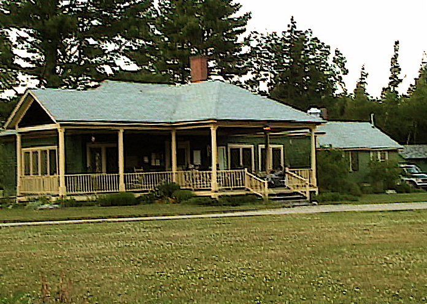
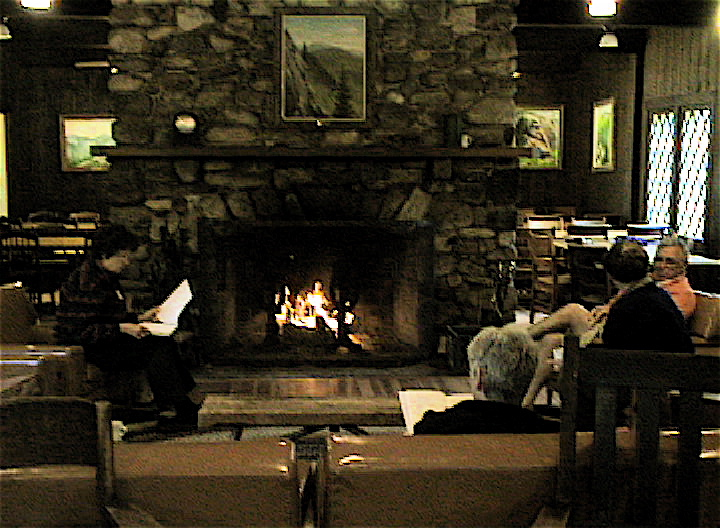

Conant Lodge

Conant Lodge from across the driveway |

A view past the fireplace into the dining room |
The Conant Lodge is the center of camp life. It houses the dining room and adjacent enclosed dining porch, a great room for rest and relaxation in front of the fireplace, and a spacious porch with rocking chairs and gliders. The combined dining areas accommodate all of the guests at a single daily seating for breakfast at 7:30 am and dinner at 6:00 pm. Hot coffee is available by 6:30 am in the area in front of the fireplace which usually has a roaring fire on cool mornings. Lunch is not served at camp but ample ingredients for making trail lunches are available just before and after breakfast. Cold drinks are available in the dining room in the afternoon and hot and cold drinks are available in the evening after dinner. See camp photos pages 3, 4, and 6 for additional pictures of activities in and around the lodge.The lodge is handicapped accessible via a wheelchair ramp to the outside porch.
Click here to return to the CRC map, cabin table, or CRC home page.